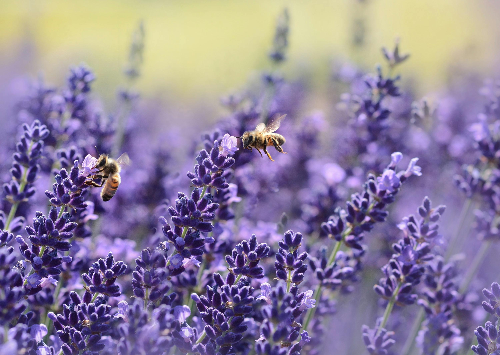
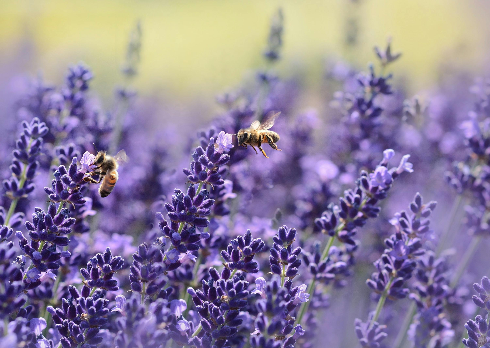
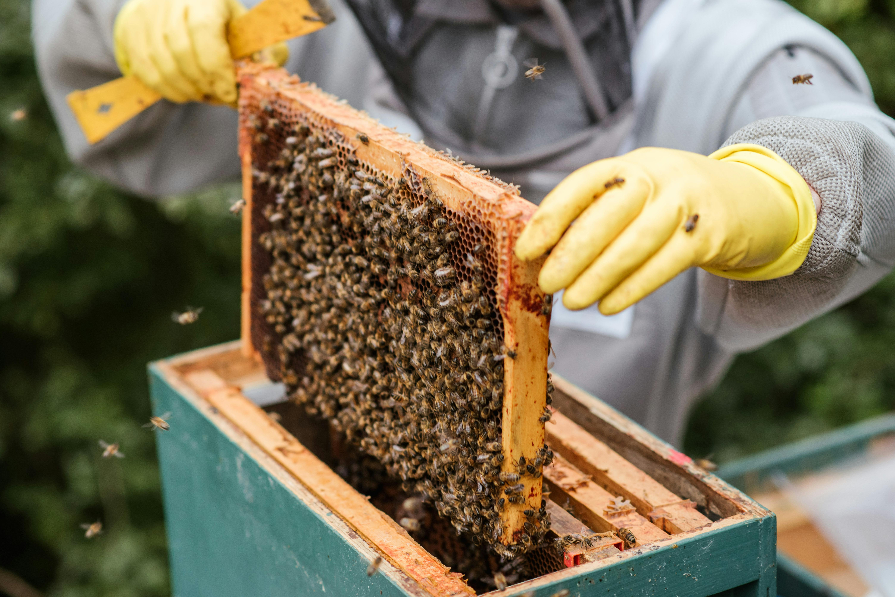
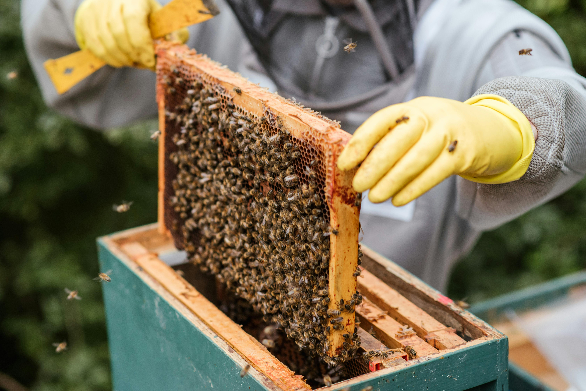
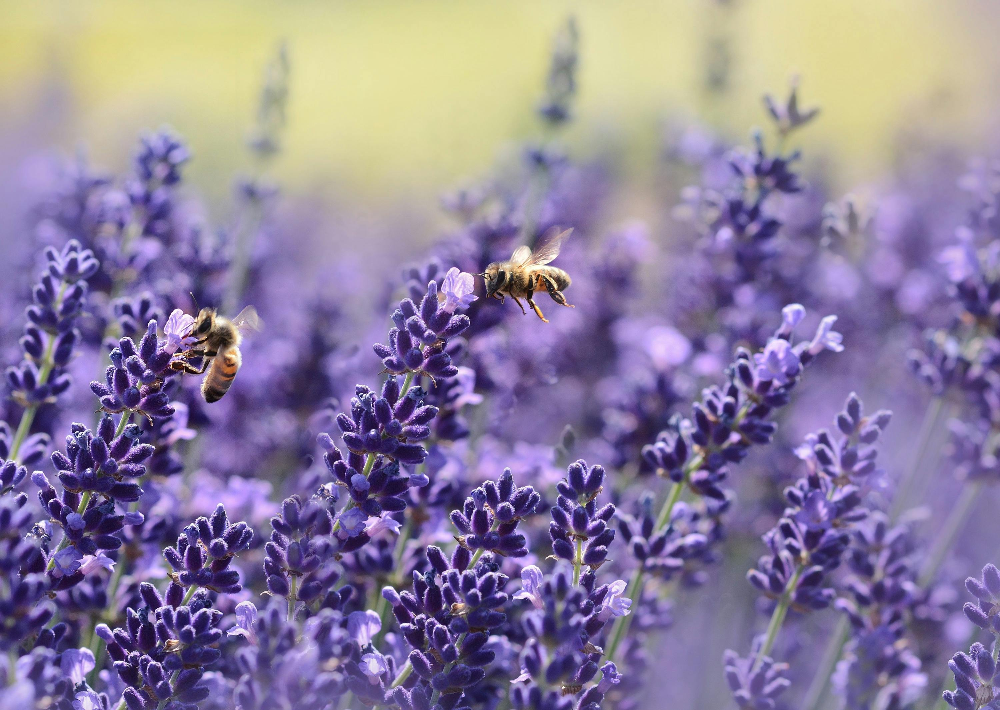
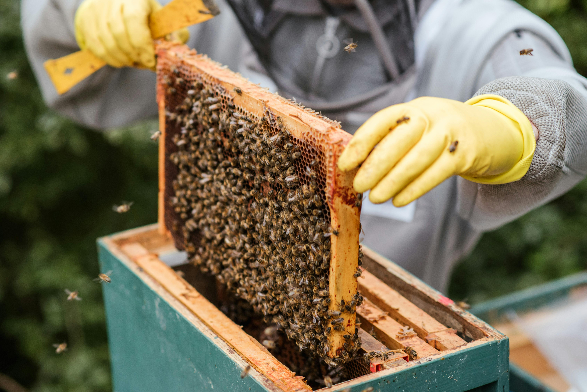

 

Dal fiore al barattolo, direttamente per te


Il nostro miele nasce da api allevate con cura vicino alle colline della Toscana. Ogni barattolo racchiude profumi e colori dei fiori locali, raccolti con amore e rispetto per la natura.